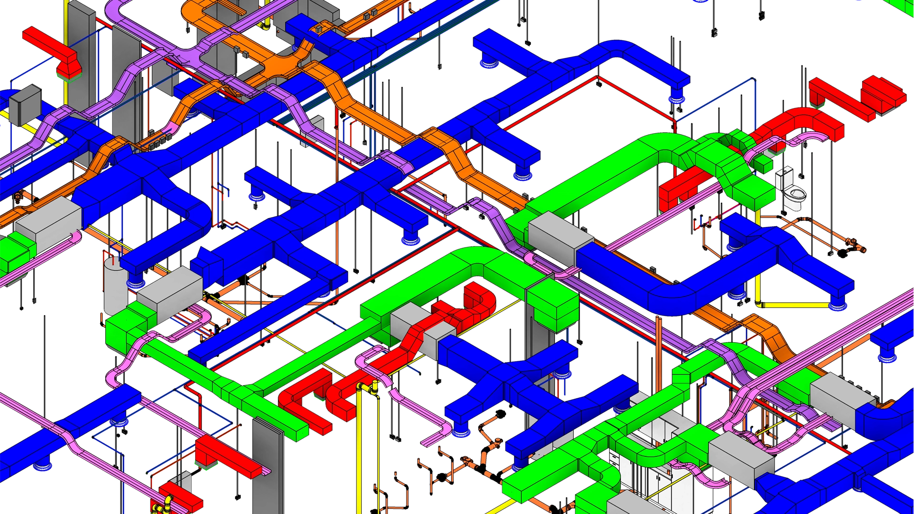
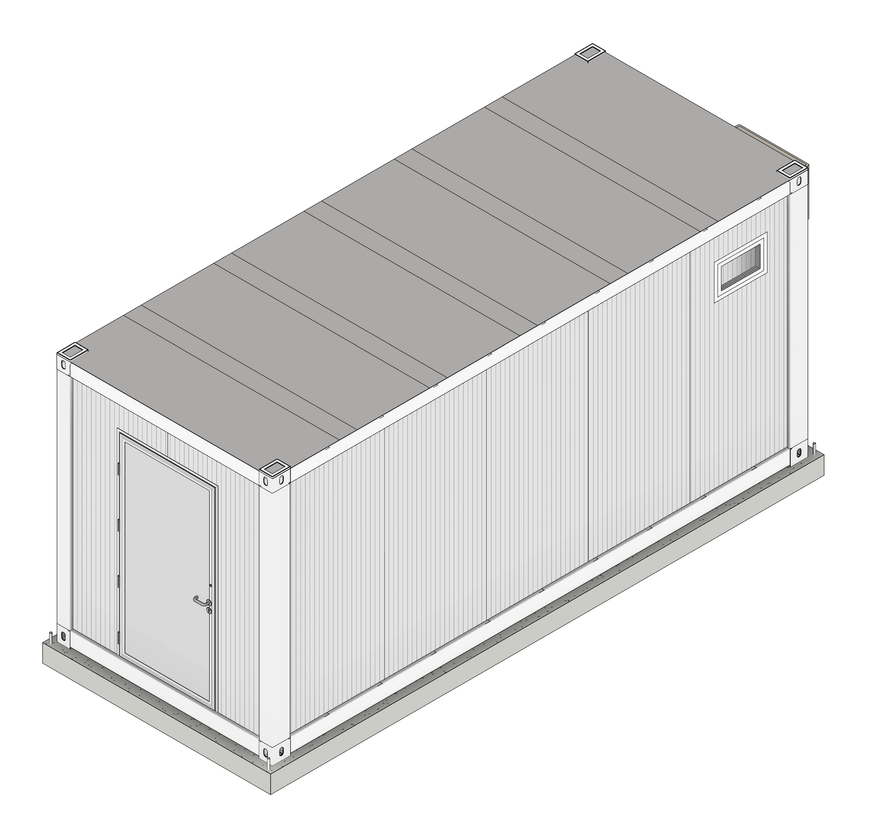
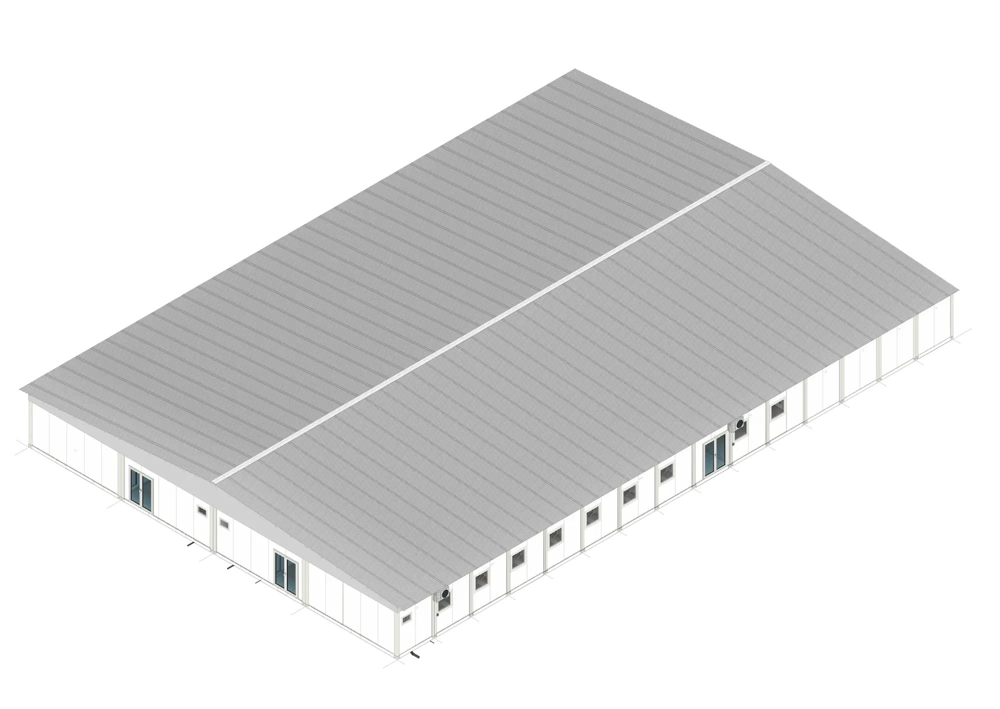

Modelos federados
Arquitectura, estructura y MEP coordinadas con criterios de obra, fabricación y cómputo.

MODELLWERK desarrolla modelos BIM LOD 400, documentación ejecutiva y configuradores online para estudios, constructoras y sistemas modulares que necesitan precisión antes de llegar a obra.
Próximo paso comercial
01 · Estudio
Para arquitectos y constructoras, el valor no está solamente en ver el edificio antes: está en detectar interferencias, ordenar cantidades, cerrar criterios constructivos y documentar con la suficiente profundidad para que la obra deje de improvisar.
Arquitectura, estructura y MEP coordinadas con criterios de obra, fabricación y cómputo.
Planos, detalles, planillas y entregables pensados para licitar, fabricar y construir.
Revisión de interferencias, inconsistencias y riesgos antes de que pasen a costo real.
02 · Sistemas configurables
La web puede mostrar tres líneas: experiencia en modelos digitales, configurador de edificios modulares y un configurador liviano de Tiny Desk con planos de muestra como puerta de entrada.

Línea A
Servicios premium para estudios y constructoras: modelado, coordinación, documentación y cómputos confiables.

Línea B
Tres familias de módulos para oficinas, vivienda compacta y equipamiento institucional, con selección de terminaciones y presupuesto guiado.

Línea C
Una herramienta accesible para customizar un escritorio compacto, descargar planos de muestra y captar leads de arquitectura digital.
03 · Producto piloto
Datos provisorios para reemplazar por información real. La intención es que el visitante perciba un sistema serio, medible y cotizable.
MW40
27 m² · 9.00 x 3.00 m · oficina, aula, showroom o vivienda mínima.
MW60
54 m² · dos módulos combinados · planta libre, sanitarios y expansión lateral.
MW90
81 m² · sistema para equipos, escuelas compactas o unidades comerciales.
Sistema constructivo
Flujo comercial
El pedido ideal: el usuario elige módulo, terminaciones y uso; luego envía la configuración para recibir presupuesto formal.
Abrir configurador MW4004 · Archivo técnico
Propongo reemplazar parte de la grilla larga por casos agrupados: salud, retail, industria y residencial. Cada caso puede hablar del rol técnico, no necesariamente de propiedad comercial.

Salud · Modular
Modelado y documentación para edificios de despliegue rápido, con foco en coordinación técnica y ejecución limpia.

Retail · Prototipo
Prototipos comerciales documentados para repetir, medir y adaptar sin perder consistencia de marca.

Industrial · Campamento
Coordinación de espacios técnicos y habitables para entornos exigentes, con prioridad en montaje y mantenimiento.

Residencial · Masterplan
Digitalización de complejos, redes y etapas para que arquitectura, costos y obra trabajen sobre la misma base.